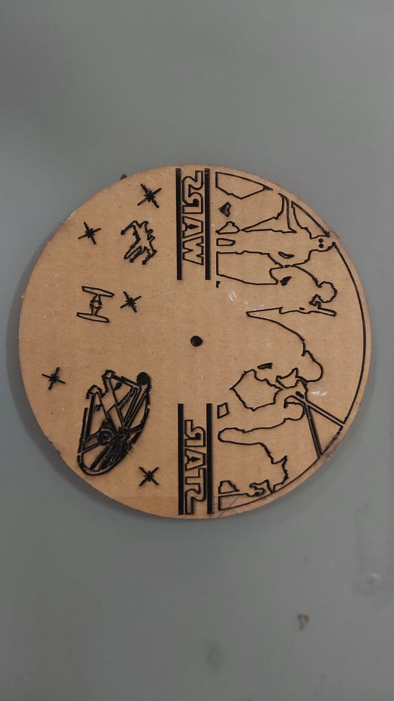
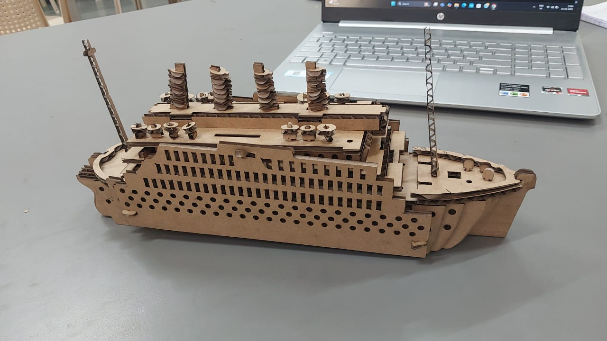

7-Day Learning Journey of Laser Cutting

Day 1 – Intro & Applications
What is laser cutting? Learned about CO₂, Fiber, and Diode lasers, their applications, and common uses such as wood, acrylic, paper, etc. Covered essential safety basics.
✅ Activity: Listed 5 laser-cut items from surroundings.

Day 2 – Hardware & Software
Identified laser cutter parts (laser tube, bed, exhaust, air assist). Explored LaserCad software and understood vector vs raster graphics and file types (.svg, .dxf).
✅ Activity: Designed a basic shape for cutting.

Day 3 – Design Basics
Learned the difference between cut vs engrave setup. Understood design tips for press-fit projects and their tolerances.
✅ Activity: Designed a small box and added engraving.

Day 4 – Materials & Settings
Studied different materials (wood, acrylic types, paper, cardboard). Learned about power/speed settings and ran test cuts to find optimal values.
✅ Activity: Ran a speed/power test grid on cardboard.

Day 5 – Operating the Laser
Learned focusing, bed setup, enabling air assist and exhaust. Practiced sending files and running the job with all safety checks (including emergency stop).
✅ Activity: Cut first real design independently.

Day 6 – Project Day
Designed and created a functional object (stand, box, or 3D structure). Learned file prep, nesting, and proper assembly.
✅ Activity: Completed and documented a project from start to finish.

Day 7 – Review & Maintenance
Learned troubleshooting for burns and incomplete cuts. Practiced basic maintenance – cleaning lens, mirrors, and other parts. Showcased project and reflected on learnings.
✅ Activity: Presented final work and shared key takeaways.
ü뮂Äçüè´ Mentor: Vansh Jaiswal (VJ)